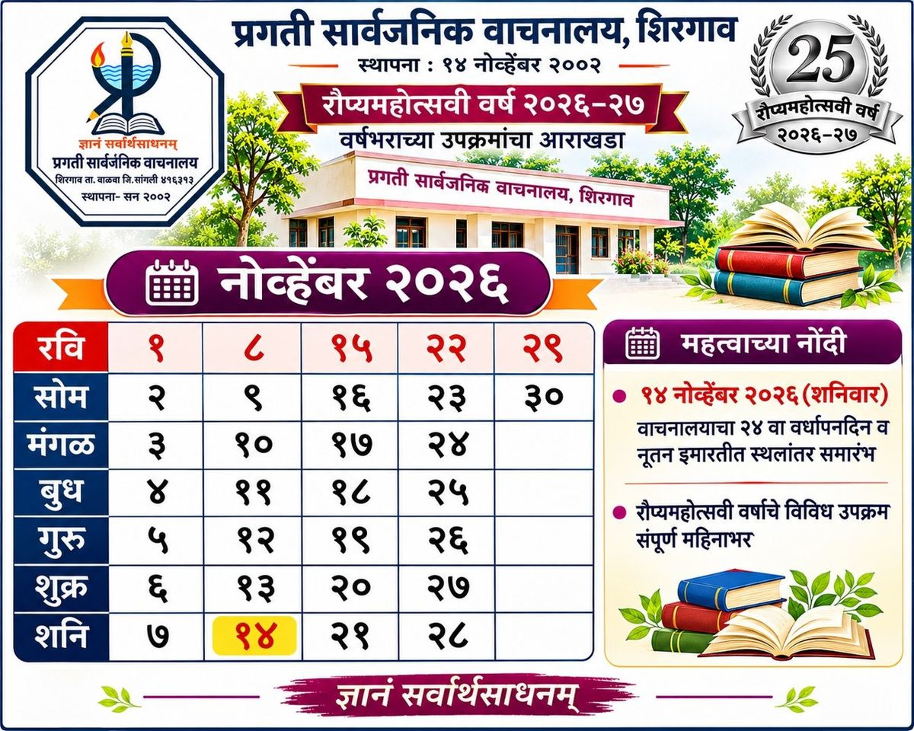

📖 बालवाचन
कथावाचन आणि आनंदाचा तास; वर्षातील सुमारे ४५ रविवारी उपक्रमांचा प्रस्ताव.

१४ नोव्हेंबर २००२ रोजी एका छोट्या खोलीत सुरू झालेले वाचनालय आज स्वतःच्या नव्या वास्तूत आहे — ग्रंथसंग्रह, अभ्यासिका, स्वतंत्र बालविभाग आणि ऑनलाइन शिक्षणाची सुविधा यांसह.
वर्धापनदिनाची छायाचित्रे पाहा

या महिन्यातील वाचनालयाचे उपक्रम दिनदर्शिकेत पाहा. मोठ्या आकारात पाहण्यासाठी चित्रावर क्लिक करा.
वाचन, चिंतन, संस्कार आणि चांगली संगत — हीच खरी प्रगती.
कथावाचन आणि आनंदाचा तास; वर्षातील सुमारे ४५ रविवारी उपक्रमांचा प्रस्ताव.
स्पर्धा परीक्षा, करिअर आणि तज्ज्ञांची ऑनलाइन व्याख्याने.
लोकसहभाग, देणग्या, CSR सहकार्य आणि सुविधांचा विस्तार.